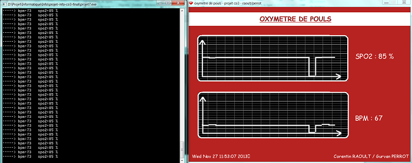

Dans le cadre de ma formation nous devions réaliser durant notre 3ème année un projet d'une durée de 6 semaines. Le sujet d'étude était commun à toute la promotion. Nous étions donc répartis en binômes pour réaliser un oxymètre de pouls (aussi connu sous le nom de cardiofréquencemètre). Ce projet a été divisé en trois différentes parties: une partie électronique, une autre informatique et la dernière VHDL. Le but de ce projet était de réaliser une carte électronique grâce à un logiciel de CAO et d'y souder tous les composants nécessaires. Ensuite cette carte a été reliée à un FPGA "commandé" par notre code VHDL. Enfin, le tout a été branché par liaison USB à un ordinateur qui, grâce au programme développé en langage C permettait d'afficher le taux de SPO2 et le nombre de battements par minutes (utilisation des librairies SDL pour l'interface graphique et FTDI pour récupérer les données USB). screenshot de l'interface pour la partie informatique:
Pour plus de détails, vous pouvez consulter notre rapport d'électronique ici et celui de VHDL ici . lien github du projet